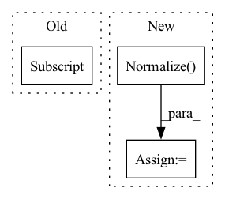

Pattern ID :41774
Before Change
// Load the VGG19 model trained on the ImageNet dataset.
vgg19 = models.vgg19(pretrained=True).eval()
// Extract the thirty-sixth layer output in the VGG19 model as the content loss.
self.feature_extractor = nn.Sequential(*list(vgg19.features.children())[:35] )
// Freeze model parameters.
for parameters in self.feature_extractor.parameters():
parameters.requires_grad = FalseAfter Change
self.feature_extractor.eval()
// The preprocessing method of the input data. This is the VGG model preprocessing method of the ImageNet dataset.
self.normalize = transforms.Normalize( normalize_mean, normalize_std, True)
// Freeze model parameters.
for model_parameters in self.feature_extractor.parameters():
model_parameters.requires_grad = FalseIn pattern: SUPERPATTERN
Frequency: 3
Non-data size: 3
Instances Fragment ID: 117080602
Project Name: lornatang/esrgan-pytorch
Commit Name: a9031d71f6f27449fe63ec703344577e35fa87cb
Time: 2022-04-15
Author: liuchangyu1111@gmail.com
File Name: model.py
M Class Name: ContentLoss
N Class Name: ContentLoss
M Method Name: __init__(4)
N Method Name: __init__(1)
M Parent Class: nn.Module
N Parent Class: nn.Module
M File Name: model.py
N File Name: model.py
M Start Line: 211
M End Line: 223
N Start Line: 186
N End Line: 198
Before Change
// Walsh ordered transforms
time_start = time.perf_counter()
stat_walsh(dataloaders["train"] , device, stat_root)
time_elapsed = (time.perf_counter() - time_start)
print(time_elapsed)
After Change
torch.manual_seed(7) // for reproductibility
//
transform = torchvision.transforms.Compose(
[torchvision.transforms.functional.to_grayscale,
torchvision.transforms.RandomCrop(
size=(img_size, img_size), pad_if_needed=True, padding_mode="edge"),
torchvision.transforms.ToTensor(),
torchvision.transforms.Normalize( [0.5], [0.5])
])
testset = \
torchvision.datasets.ImageFolder(root=data_root, transform=transform) Fragment ID: 117080591
Project Name: openspyrit/spyrit
Commit Name: 90a8a6b0e2267dca7caa14516cd6dd8053719d75
Time: 2022-09-06
Author: ducros@creatis.insa-lyon.fr
File Name: spyrit/misc/statistics.py
M Class Name: AnonimousClass
N Class Name: AnonimousClass
M Method Name: stat_walsh_ImageNet(6)
N Method Name: stat_walsh_ImageNet(4)
M Parent Class:
N Parent Class:
M File Name: spyrit/misc/statistics.py
N File Name: spyrit/misc/statistics.py
M Start Line: 313
M End Line: 335
N Start Line: 461
N End Line: 487
Before Change
Data loader object.
input_dir = config["input_dir"]
batch_size = config["batch_size"]
transform = torchvision.transforms.Compose([
torchvision.transforms.Resize(size=256),After Change
else:
transform = torchvision.transforms.Compose(
[
torchvision.transforms.ToTensor(),
torchvision.transforms.Normalize( mean, std) ,
]
)
Fragment ID: 117080594
Project Name: kaifishr/pytorchrelevancepropagation
Commit Name: 4d7d0427c2e1a2e503ec9e264a6af17a47c24b35
Time: 2022-10-20
Author: kaifabi@posteo.net
File Name: src/data.py
M Class Name: AnonimousClass
N Class Name: AnonimousClass
M Method Name: get_data_loader(1)
N Method Name: get_data_loader(1)
M Parent Class:
N Parent Class:
M File Name: src/data.py
N File Name: src/data.py
M Start Line: 19
M End Line: 27
N Start Line: 21
N End Line: 47